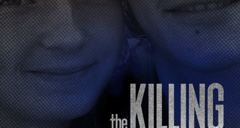

About the film
Mads Brügger's The Black Swan is a gripping real-life thriller that shatters illusions of Scandinavian innocence. At its heart is Amira Smajic, a Copenhagen lawyer who spent a decade navigating both high society and the criminal underworld—until she agrees to go undercover, rigging her old consultancy with hidden cameras and exposing a web of money laundering, fraud, and corruption that snakes from biker gangs to the national elite.
With exclusive access and nail-biting immediacy, Brügger's film unspools like a spy drama, revealing uneasy alliances and betrayals that topple Denmark's myth of incorruptibility. Smajic's journey as a whistleblower and the ethical twists that follow force audiences to confront unsettling realities lurking beneath even the most trusted institutions.
In the spirit of Double Exposure's theme of New Fault Lines, The Black Swan exposes the cracks in Western democracies and the price of challenging powerful, hidden forces. It's an explosive exploration of deception, trust, and what happens when the truth is stranger— and riskier—than fiction.
At the festival
- 2025 U.S. Premiere · Saturday, November 1, 2025 · 4:30 PM · Naval Heritage CenterScreening followed by audience talkback with director Mads Brügger, moderated by Vanessa Hope.
Sessions about this film
- 2025 · Fri Oct 31 · 3:20 PMConversationSubterfuge in Search of Truth: Mads Brügger in Conversation with Ted HopeMads Brügger, Ted Hope
- 2025 · Fri Oct 31 · 3:20pmPanel · DX²Subterfuge in Search of TruthMads Brügger, Ted Hope
More films on these topics
 Cover-UpLaura Poitras, Mark Obenhaus2025 · 117 min
Cover-UpLaura Poitras, Mark Obenhaus2025 · 117 min Trade SecretAbraham Joffe2025 · 98 min
Trade SecretAbraham Joffe2025 · 98 min
The Killing of a JournalistMatt Sarnecki2022 · 100 min The Pegasus projectLaurence Topham2021 · 4 min
The Pegasus projectLaurence Topham2021 · 4 min United States vs. Reality WinnerOPENING NIGHT: United States vs. Reality Winner2021 · 94 min
United States vs. Reality WinnerOPENING NIGHT: United States vs. Reality Winner2021 · 94 min- Enemies of the StateSonia Kennebeck2020 · 104 min